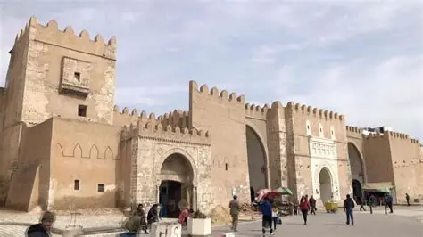

Médina de Sfax
Entourée de remparts du IXe siècle remarquablement préservés, la médina de Sfax est l'une des plus authentiques de Tunisie. Moins touristique que d'autres, elle conserve une vie commerciale intense avec ses souks traditionnels, particulièrement celui des forgerons et des bijoutiers.